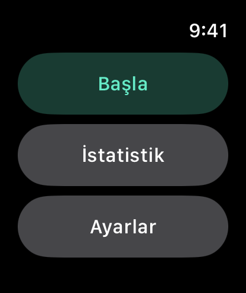
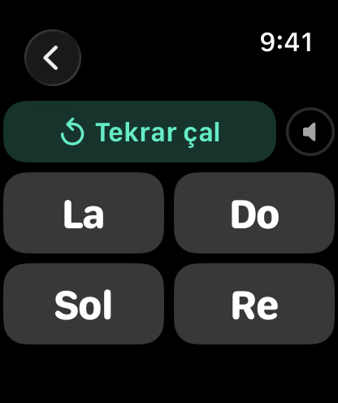
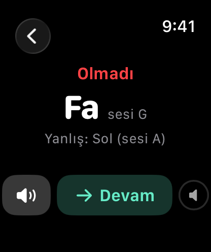
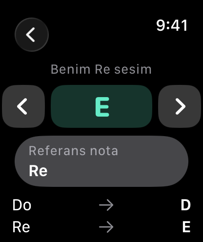
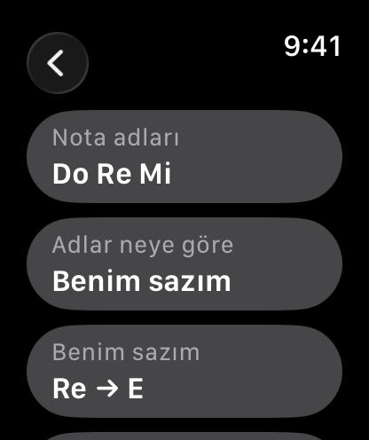
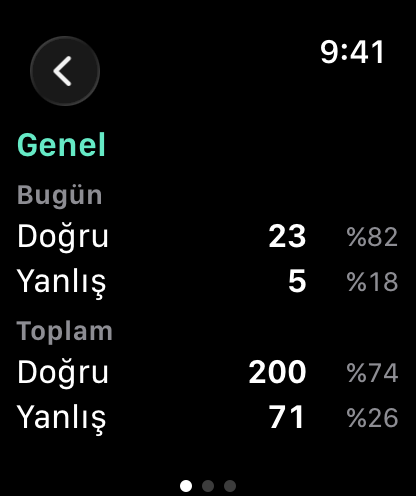

Doremi Hocası Kolunda
Apple Watch’unuzda nota tanıma alıştırmaları yapın. Çalan notayı dinleyip dört seçenek arasından doğru adı seçin. Nota adlarını Do Re Mi veya A B C olarak görüntüleyebilir, yedi doğal notayla başlayıp diyez ve bemolleri de ekleyebilirsiniz. “Benim sazım” ayarıyla nota adlarını çalgınızın akorduna göre ayarlayabilirsiniz. iPhone gerekmez.
watchOS 8 veya sonrası gerekir.
İndir


Destek
Sorularınız veya karşılaştığınız sorunlar için bize yazabilirsiniz.
Yazmadan önce
Bize yazmadan önce aşağıdaki adımları deneyebilirsiniz:
- Uygulama yanıt vermiyor mu? Digital Crown'a iki kez basıp açık uygulamaları görün, ardından Doremi Hocası kartını yukarı kaydırıp kapatın. Uygulama listenizden yeniden açın.
- Ses çıkmıyor mu? Alıştırma sırasında Digital Crown’u çevirerek sesi açın. Sesi saatin hoparlöründen veya bağlı Bluetooth kulaklıktan duyabilirsiniz.
- Saatten çıkan ses çok mu kısık? Özellikle gürültülü ortamlarda Bluetooth kulaklık, saatin hoparlöründen çok daha net duyulur.
- Nota adları sazınızla uyuşmuyor mu? Ayarlar → Adlar neye göre seçeneğinin Standart mı yoksa Benim sazım mı olduğuna bakın. Benim sazım seçiliyse Re'nin hangi sese ayarlandığını da kontrol edin.
- Do Re Mi beklerken A B C mi görüyorsunuz? Ayarlar → Nota adları bölümünden değiştirin.
Sıkça Sorulan Sorular
- iPhone olmadan çalışır mı?
Evet. Uygulama doğrudan Apple Watch’ta çalışır; iPhone gerekmez. - Süre sınırı var mı?
Hayır. Cevap vermeden önce notayı istediğiniz kadar dinleyebilirsiniz. Cevabınızdan sonra doğru nota gösterilir; isterseniz tekrar dinleyebilirsiniz. - "Benim sazım" ne yapar?
Çalgınızda kullandığınız nota adları standart adlandırmadan farklıysa bu ayarı kullanabilirsiniz. Örneğin, Re olarak adlandırdığınız tel E sesi veriyorsa Benim Re sesim ayarından E’yi seçin. Uygulama diğer notaları da buna göre ayarlar. - “Benim sazım” ayarını A B C adlarıyla kullanabilir miyim?
Hayır. A B C her zaman standart sesi gösterir. Saza göre adlandırma yalnızca Do Re Mi adlarıyla çalışır. - Diyez ve bemoller nasıl gösteriliyor?
Şu adlarla gösterilir: Do♯, Mi♭, Fa♯, Sol♯, Si♭. Sonuç ekranında aynı notanın diğer adı da görünebilir. - Notalar hangi oktavda çalıyor?
Saatin hoparlöründen en iyi duyulan aralık olan beşinci oktavda (C5 ile B5 arası). Yalnızca nota adı değerlendirilir, oktav fark etmez. - Hangi cevaplar istatistiklere dahil edilir?
Yalnızca cevapladığınız sorular sayılır. Tekrar dinlemeler ve cevap vermeden çıktığınız sorular istatistiklere eklenmez. - Ayarlarım kaydediliyor mu?
Evet. Seçtiğiniz nota adları, “Benim sazım” ayarı ve çalışılacak notalar kaydedilir. - Herhangi bir veri topluyor mu?
Hayır. Ayarlarınız ve alıştırma sonuçlarınız yalnızca saatinizde saklanır; başka bir yere gönderilmez.
Kullanım






Alıştırma nasıl yapılır?
- Başla düğmesine dokunun. Bir nota duyacaksınız.
- Notayı yeniden dinlemek için Tekrar çal düğmesine dokunun.
- Duyduğunuz notanın adına dokunun.
- Sonuç ekranında Doğru ya da Olmadı yazısı, doğru nota adı ve sizin seçiminiz görünür. Notayı yeniden dinlemek için hoparlör düğmesine dokunun.
- Sonraki soru için Devam düğmesine dokunun.
Ayarlar
- Nota adları: Do Re Mi ya da A B C.
- Adlar neye göre: Standart (Do C, Re D ve devamı) ya da Benim sazım.
- Benim sazım: < ve > düğmeleriyle referans notanızın hangi sesi verdiğini seçin. Varsayılan referans nota Re'dir. Seçicinin altında her adın hangi sesle çalacağını gösteren bir liste bulunur.
- Çalışılacak notalar: Yedi nota (yedi doğal ad) ya da Diyez/bemol ile (on iki notanın tamamı).
Benim sazım seçiliyken Yedi nota, piyanonun beyaz tuşları değil, sazınızın adlandırmasındaki yedi doğal notadır. Aşağıdaki tablo her adın Standart ayarda ve Re'nin E sesine ayarlandığı Benim sazım ayarında hangi sesle çaldığını gösterir. Bütün adlar iki yarım ses yukarı kayar:
| Ad | Standart | Benim sazım (Re sesi E) |
|---|---|---|
| Do | C | D |
| Re | D | E |
| Mi | E | F♯ |
| Fa | F | G |
| Sol | G | A |
| La | A | B |
| Si | B | C♯ |
İstatistik
Bugün ve Toplam bölümlerinde doğru ve yanlış cevap sayılarınızı ve yüzdelerini görebilirsiniz. Yana kaydırarak üç sayfa arasında geçebilirsiniz: Genel, Yedi nota ve Diyez/bemol ile.
Yasal
Gizlilik Politikası
Son Güncelleme: Eylül 2026
Giriş
Doremi Hocası Kolunda'ya hoş geldiniz. Gizliliğinize saygı göstermeyi ve onu korumayı taahhüt ediyoruz. Bu Gizlilik Politikası, topladığımız, bu durumda toplamadığımız bilgi türlerini ve gizliliğinizi sağlamak için kullandığımız yöntemleri açıklar.
Toplamadığımız Bilgiler
Doremi Hocası Kolunda, sıfır veri toplama ilkesiyle tasarlanmıştır. Kullanıcılarımızdan hiçbir kişisel veriyi toplamıyor, saklamıyor, kullanmıyor, paylaşmıyor veya aktarmıyoruz. Uygulama tümüyle Apple Watch'unuzda çalışır; hiçbir sunucuda veri işlenmez veya saklanmaz.
Uygulama saatinizde yalnızca iki şey tutar: ayarlarınız (nota adları, saz eşlemesi, nota seti) ve çalışma sayılarınız (bugün ve tüm zamanlar için doğru ve yanlış cevaplar). Bunlar yalnızca saatte saklanır, hiçbir yere gönderilmez ve uygulamayı sildiğinizde silinir.
Uygulamanın internet erişimi, mikrofon erişimi, kullanıcı hesabı, analiz aracı, reklam veya üçüncü taraf kodu yoktur.
Üçüncü Taraf Hizmetleri
Doremi Hocası Kolunda; analiz araçları, reklam ağları veya sosyal medya platformları gibi hiçbir üçüncü taraf hizmetiyle bütünleşmez. Hiçbir üçüncü tarafla veri paylaşılmaz.
Çocukların Gizliliği
Hiçbir veri toplamadığımız için, Çocukların Çevrimiçi Gizliliğini Koruma Yasası (COPPA) gibi çocukların gizliliğine ilişkin tüm ilgili düzenlemelere uyuyoruz.
Bu Politikadaki Değişiklikler
Gizlilik Politikamızı zaman zaman güncelleyebiliriz. Değişiklikler için bu sayfayı düzenli olarak gözden geçirmenizi öneririz. Değişiklikler, bu sayfada yayımlandığı anda geçerli olur.
Bize Ulaşın
Gizlilik Politikamızla ilgili soru veya önerileriniz varsa bize çekinmeden yazın: support [at] hoshinosoftware [dot] com